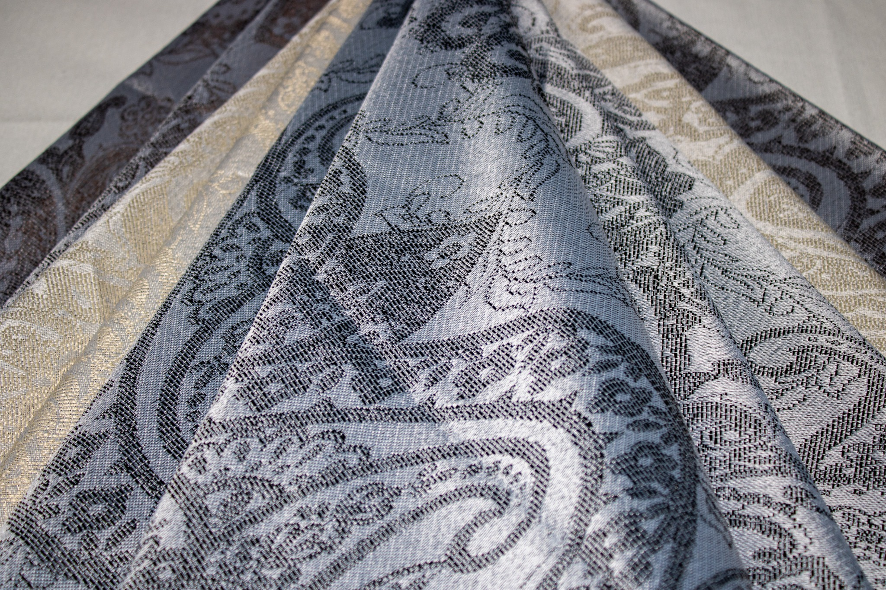
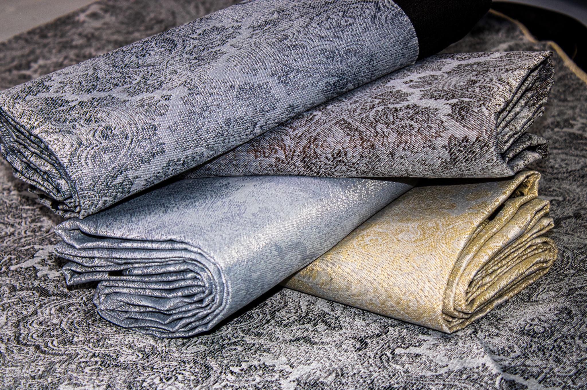
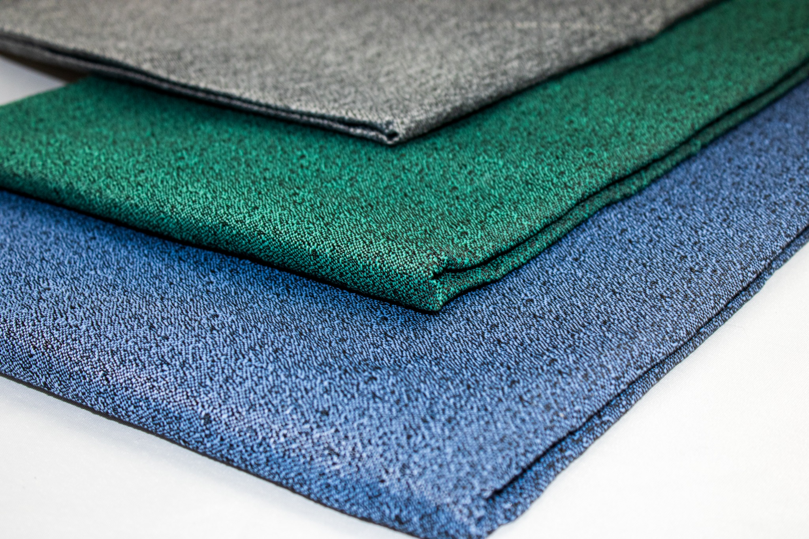
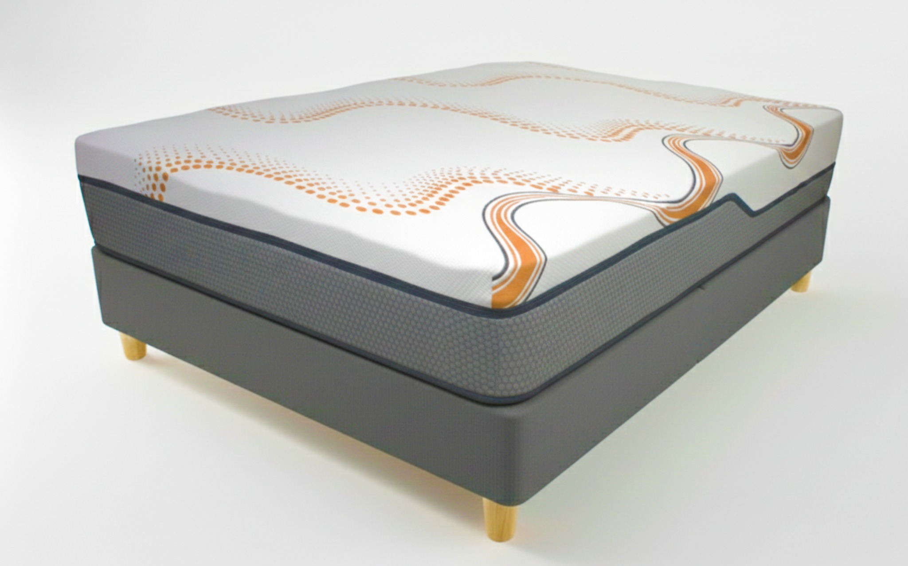
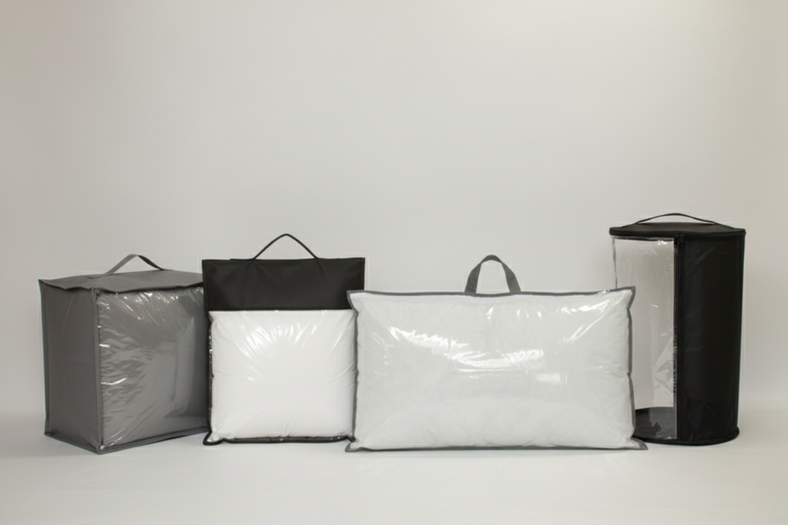
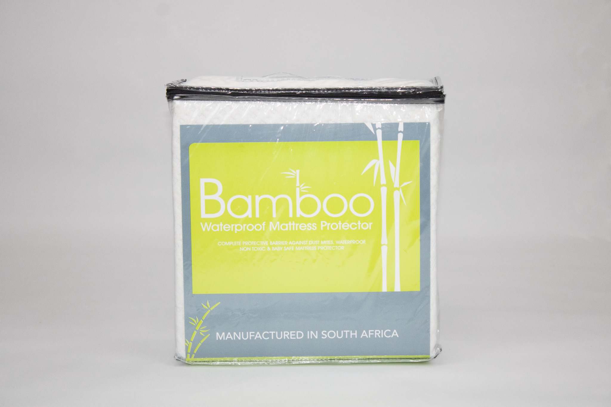
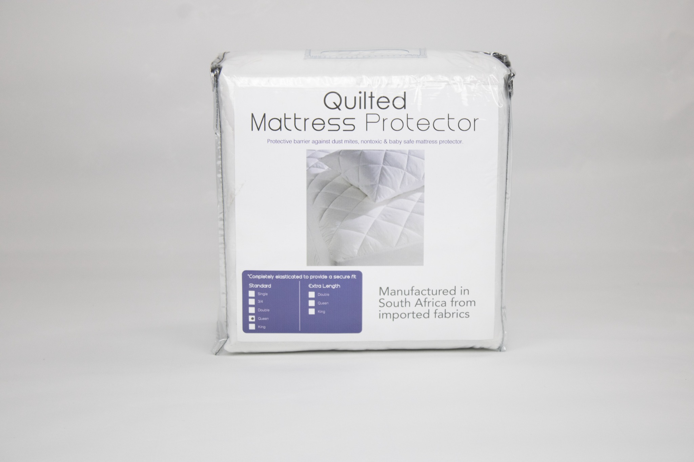
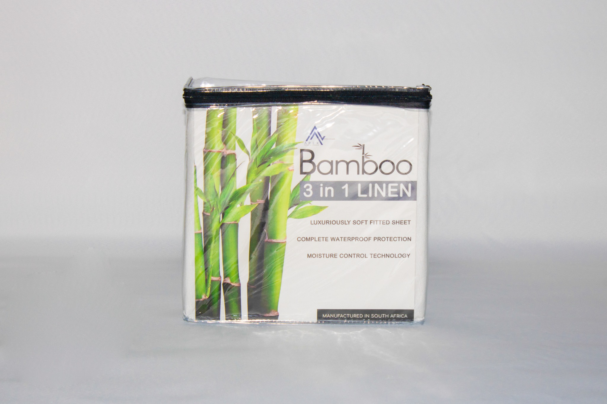

01
Jacquard
Decorative woven designs with depth, texture and a premium finish.

Premium textile solutions
Fabrics, packaging and private-label solutions for manufacturers, CMTs and commercial textile buyers.
Galata Textiles
We supply mattress fabrics, decorative jacquards, upholstery textiles and customised packaging solutions. Our focus is dependable service, consistent quality and commercially useful solutions for South African manufacturers.
Our solutions
Original product photography, real production footage and curated ranges that make specification and sourcing easier.

Decorative woven designs with depth, texture and a premium finish.

Durable woven constructions in coordinated commercial colourways.

Quilted, knitted and woven fabrics for bedding manufacturers.

Protective, branded and retail-ready packaging manufactured to specification.
Manufacturing in motion
Authentic production footage gives customers a clear view of the technology, consistency and workmanship behind the fabrics we supply.
Featured textiles
A curated selection from Galata's jacquard and upholstery solutions.
Capabilities
Galata supports manufacturers beyond fabric supply, helping streamline the route from material selection to professional retail presentation.
Mattress, upholstery and decorative textile ranges selected for commercial manufacturing.
Solutions aligned to cutting, sewing, quilting and production requirements.
Protective bags, display packaging and custom formats for finished goods.
Printed inserts, labels and retail-ready presentation for your brand.
Packaging solutions
Galata offers packaging and labelling services to CMT clients, as well as bespoke packaging products for businesses that need packaging for their own ranges.
Discuss your packaging


Precision in every metre
Short production clips show both the quilting process and the final patterned surface.
Start a conversation
Share the intended application, required quantity and any packaging or private-label requirements. We will help identify the right next step.
23 Gravel Road
Kya Sands, Johannesburg
Monday–Friday · 07:00–17:00